DJI Air 2S
DJI · 800 × 800
dji-air-2s产品样例图
官方来源
DJI Air 3
DJI · 374 × 374
dji-air-3产品样例图
官方来源
DJI Air 3S
DJI · 374 × 374
dji-air-3s产品样例图
官方来源
DJI Avata
DJI · 672 × 672
dji-avata产品样例图
官方来源
DJI Avata 2
DJI · 374 × 374
dji-avata-2产品样例图
官方来源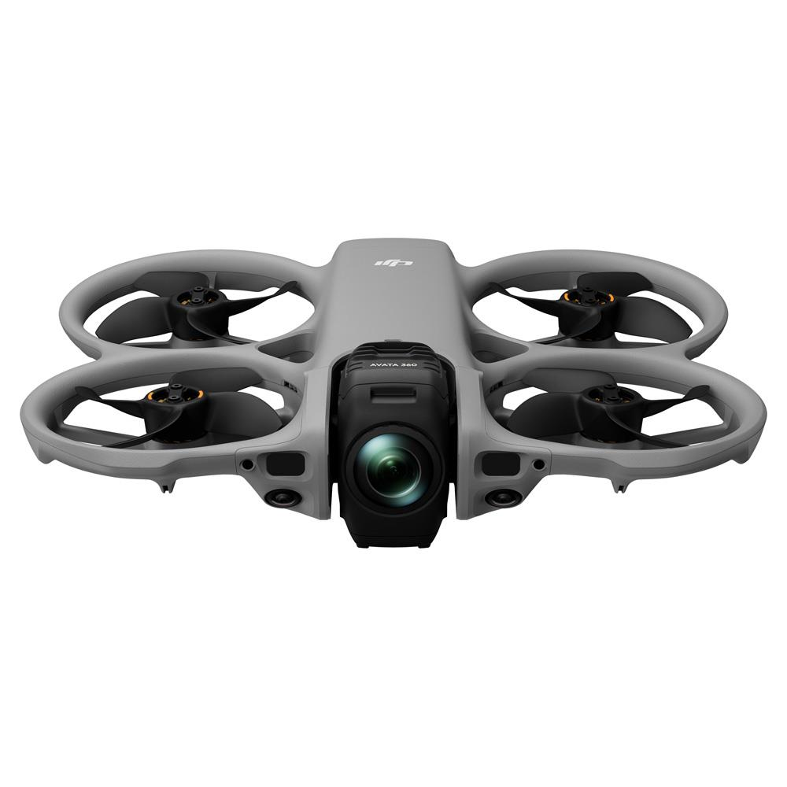
DJI Avata 360
DJI · 1000 × 1000
dji-avata-360产品样例图
第三方产品页面来源
DJI Flip
DJI · 374 × 374
dji-flip产品样例图
官方来源
DJI FlyCart 100
DJI · 374 × 374
dji-flycart-100产品样例图
官方来源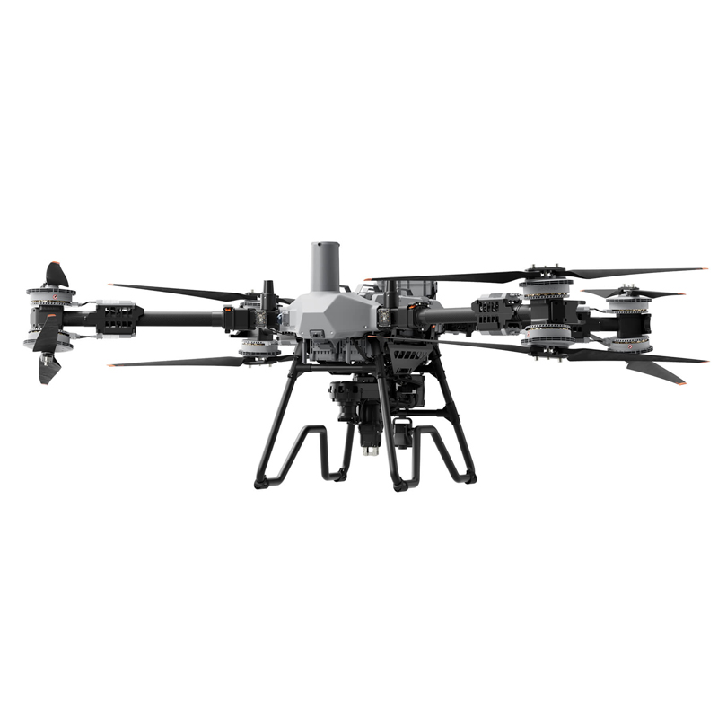
DJI FlyCart 200
DJI · 800 × 800
dji-flycart-200产品样例图
第三方产品页面来源
DJI FlyCart 30
DJI · 374 × 374
dji-flycart-30产品样例图
官方来源
DJI FPV
DJI · 800 × 800
dji-fpv产品样例图
官方来源
DJI Lito 1
DJI · 576 × 576
dji-lito-1产品样例图
官方来源
DJI Lito X1
DJI · 640 × 640
dji-lito-x1折叠状态产品图。
官方来源
DJI Matrice 3D/3TD
DJI · 1920 × 1920
dji-matrice-3d-3td组合机型条目，使用 Matrice 3D 代表图。
第三方产品页面来源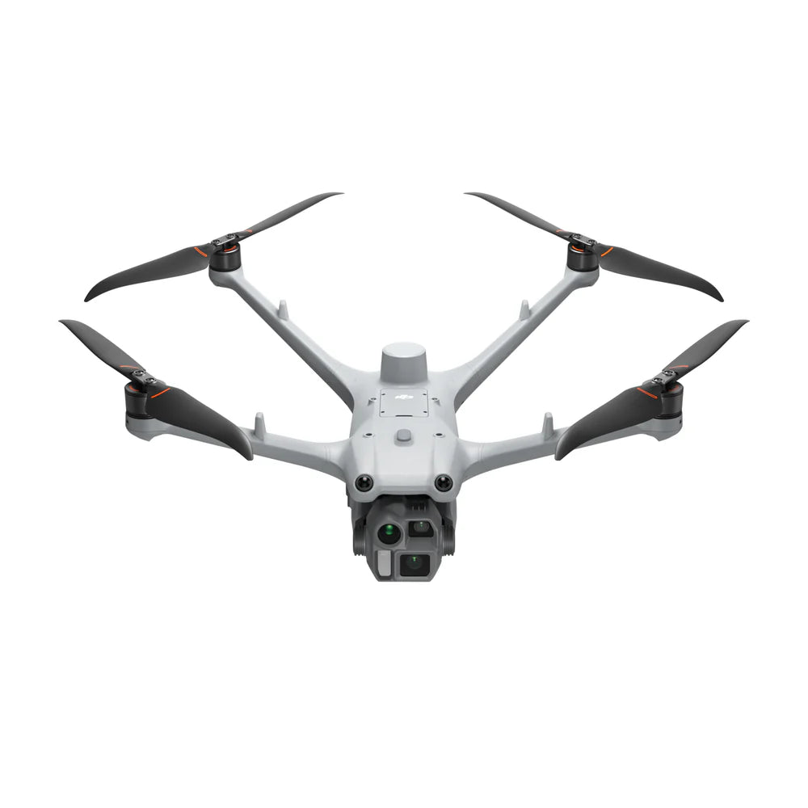
DJI Matrice 4D/4TD
DJI · 1000 × 1000
dji-matrice-4d-4td组合机型条目，使用 Matrice 4D 代表图。
第三方产品页面来源
DJI Matrice 4T/4E
DJI · 374 × 374
dji-matrice-4t-4e组合机型条目，使用 Matrice 4 系列代表图。
官方来源
DJI Mavic 3
DJI · 800 × 800
dji-mavic-3产品样例图
官方来源
DJI Mavic 3 Classic
DJI · 374 × 374
dji-mavic-3-classic产品样例图
官方来源
DJI Mavic 3 Pro
DJI · 374 × 374
dji-mavic-3-pro产品样例图
官方来源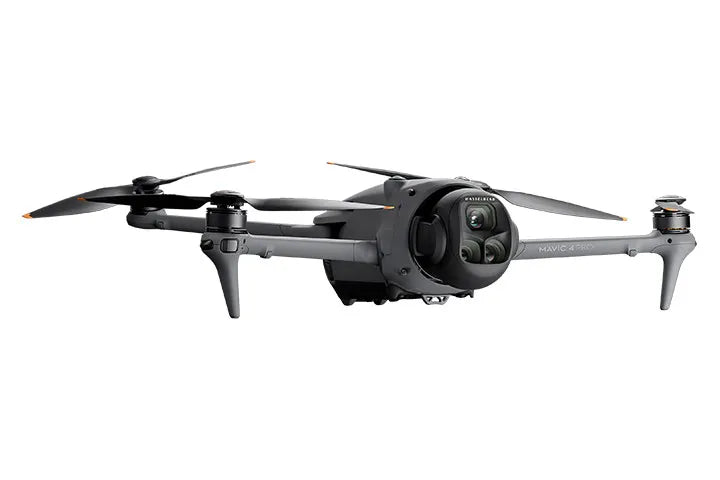
DJI Mavic 4 Pro
DJI · 720 × 480
dji-mavic-4-pro产品样例图
第三方产品页面来源
DJI Mini 2/DJI Mini 2 SE
DJI · 800 × 800
dji-mini-2组合机型条目，使用 DJI Mini 2 代表图。
官方来源
DJI Mini 3
DJI · 374 × 374
dji-mini-3产品样例图
官方来源
DJI Mini 3 Pro
DJI · 700 × 700
dji-mini-3-pro产品样例图
官方来源
DJI Mini 4 Pro
DJI · 374 × 374
dji-mini-4-pro产品样例图
官方来源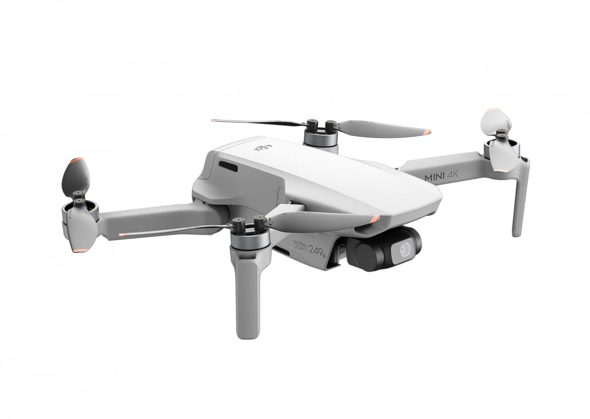
DJI Mini 4K
DJI · 1200 × 852
dji-mini-4k产品样例图
第三方产品页面来源
DJI Mini 5 pro
DJI · 1445 × 1445
dji-mini-5-pro产品样例图
第三方产品页面来源
DJI Mini SE
DJI · 800 × 800
dji-mini-se产品样例图
官方来源
DJI Neo
DJI · 374 × 374
dji-neo产品样例图
官方来源
DJI Neo 2
DJI · 1000 × 1000
dji-neo-2产品图带来源页面原有品牌文字。
第三方产品页面来源
DJI Mavic 3E/3T/3M/3TA
DJI · 374 × 374
industry-260组合机型条目，使用 Mavic 3 Enterprise 系列代表图。
官方来源
Inspire 1 Series
DJI · 800 × 800
inspire-1-series系列条目，使用 Inspire 1 代表图。
官方来源
Inspire 2
DJI · 800 × 800
inspire-2产品样例图
官方来源
Inspire 3
DJI · 374 × 374
inspire-3产品样例图
官方来源
DJI Matrice 400
DJI · 374 × 374
m-400产品样例图
官方来源
M100
DJI · 800 × 800
m100产品样例图
官方来源
M200 Series
DJI · 800 × 800
m200-series系列条目，使用 Matrice 200 系列代表图。
官方来源
M30 Series
DJI · 374 × 374
m30-series系列条目，使用 Matrice 30 系列代表图。
官方来源
M300 Series
DJI · 1080 × 1080
m300-series系列条目，使用 Matrice 300 RTK 代表图。
官方来源
M350 RTK
DJI · 374 × 374
m350-rtk产品样例图
官方来源
M600 Series
DJI · 1600 × 1600
m600-series系列条目，使用 Matrice 600 Pro 代表图。
官方来源
Mavic 2
DJI · 800 × 800
mavic-2组合机型条目，使用 Mavic 2 系列代表图。
官方来源
Mavic 2 Enterprise
DJI · 800 × 800
mavic-2-enterprise产品样例图
官方来源
Mavic Air
DJI · 800 × 800
mavic-air产品样例图
官方来源
Mavic Air 2
DJI · 800 × 800
mavic-air-2产品样例图
官方来源
Mavic Mini
DJI · 800 × 800
mavic-mini产品样例图
官方来源
Mavic Pro
DJI · 448 × 448
mavic-pro产品样例图
官方来源
T20P
DJI · 374 × 374
mg-new产品样例图
官方来源
T10
DJI · 374 × 374
mg-new-t10产品样例图
官方来源
T100
DJI · 374 × 374
mg-new-t100产品样例图
官方来源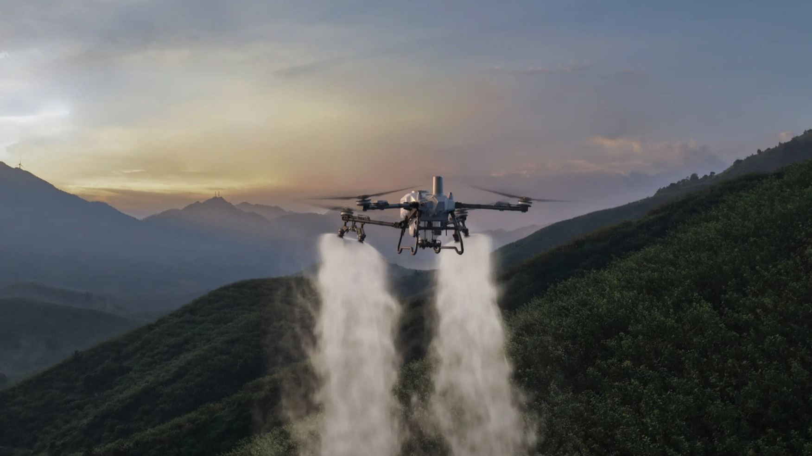
T100S
DJI · 1752 × 985
mg-new-t100-s场景图。
第三方产品页面来源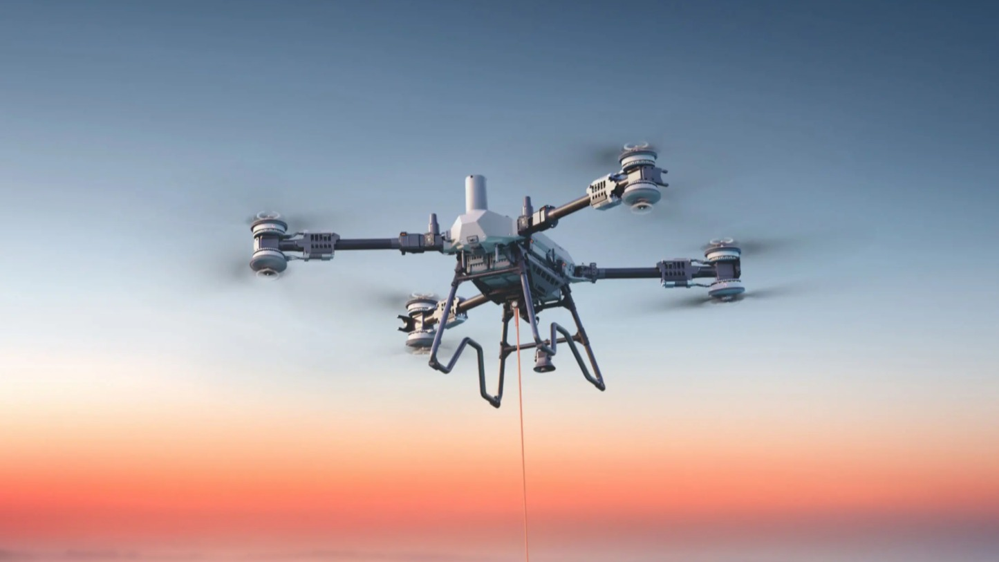
T200
DJI · 1445 × 813
mg-new-t200场景图。
第三方产品页面来源
T25
DJI · 374 × 374
mg-new-t25产品样例图
官方来源
T25P
DJI · 374 × 374
mg-new-t25p产品样例图
官方来源
T30
DJI · 374 × 374
mg-new-t30产品样例图
官方来源
T40
DJI · 374 × 374
mg-new-t40产品样例图
官方来源
T50
DJI · 374 × 374
mg-new-t50产品样例图
官方来源
T55
DJI · 374 × 374
mg-new-t55产品样例图
官方来源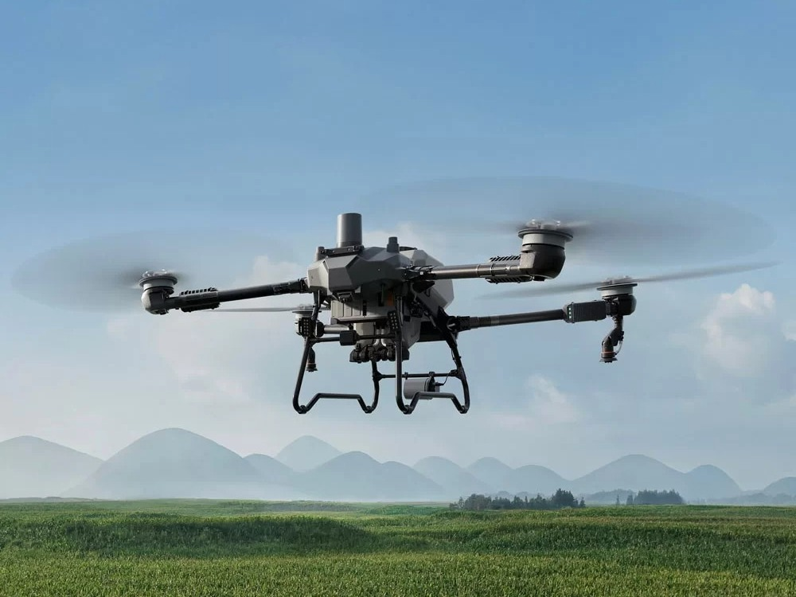
T60
DJI · 1000 × 750
mg-new-t60场景图。
第三方产品页面来源
T70/T70P
DJI · 374 × 374
mg-new-t70组合机型条目，使用 T70P 代表图。
官方来源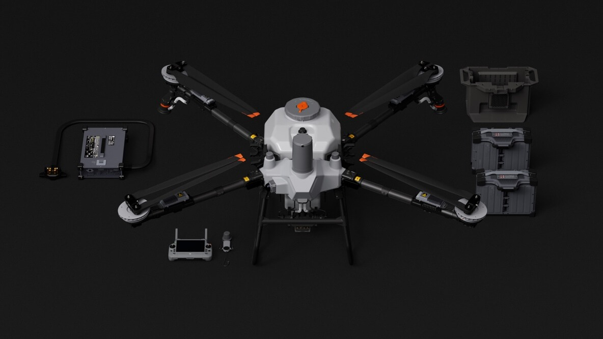
T70S
DJI · 1184 × 666
mg-new-t70-s包含飞行器与配件的套装图。
第三方产品页面来源
MG 1S/1A/1P/1P RTK/T16/T20
DJI · 374 × 374
mg1p组合机型条目，使用 AGRAS MG-1P 代表图。
官方来源
Phantom 3 4K
DJI · 640 × 640
phantom-3-4K产品样例图
官方来源
Phantom 3 Advanced
DJI · 320 × 320
phantom-3-advanced产品样例图
官方来源
Phantom 3 Pro
DJI · 800 × 800
phantom-3-pro产品样例图
官方来源
Phantom 3 SE
DJI · 640 × 640
phantom-3-se产品样例图
官方来源
Phantom 3 Standard
DJI · 800 × 800
phantom-3-standard产品样例图
官方来源
Phantom 4
DJI · 800 × 800
phantom-4产品样例图
官方来源
Phantom 4 Advanced
DJI · 640 × 640
phantom-4-advanced产品样例图
官方来源
Phantom 4 Multispectral
DJI · 800 × 800
phantom-4-multispectral产品样例图
官方来源
Phantom 4 Pro
DJI · 800 × 800
phantom-4-pro产品样例图
官方来源
Phantom 4 Pro V2/V2+
DJI · 800 × 800
phantom-4-pro-v2组合机型条目，使用 Phantom 4 Pro V2.0 代表图。
官方来源
Phantom 4 RTK
DJI · 800 × 800
phantom-4-rtk产品样例图
官方来源
Spark
DJI · 800 × 800
spark产品样例图
官方来源
ATOM 2
博坦 · 1080 × 1080
potensic-atom-2产品样例图
官方来源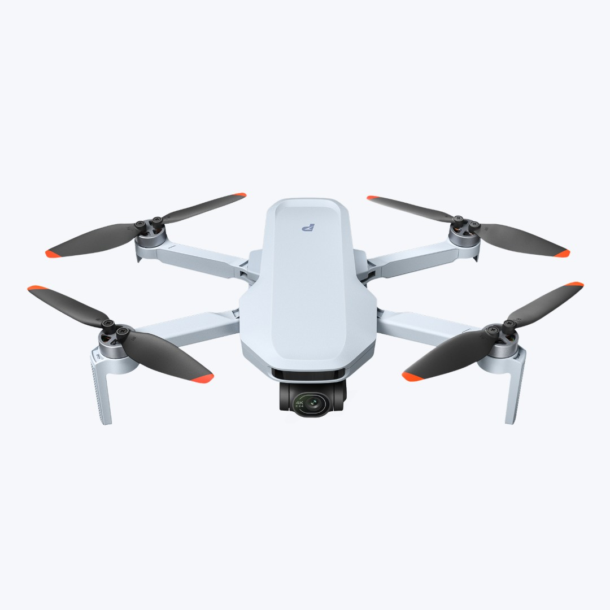
ATOM 2S
博坦 · 1080 × 1080
potensic-atom-2s产品样例图
官方来源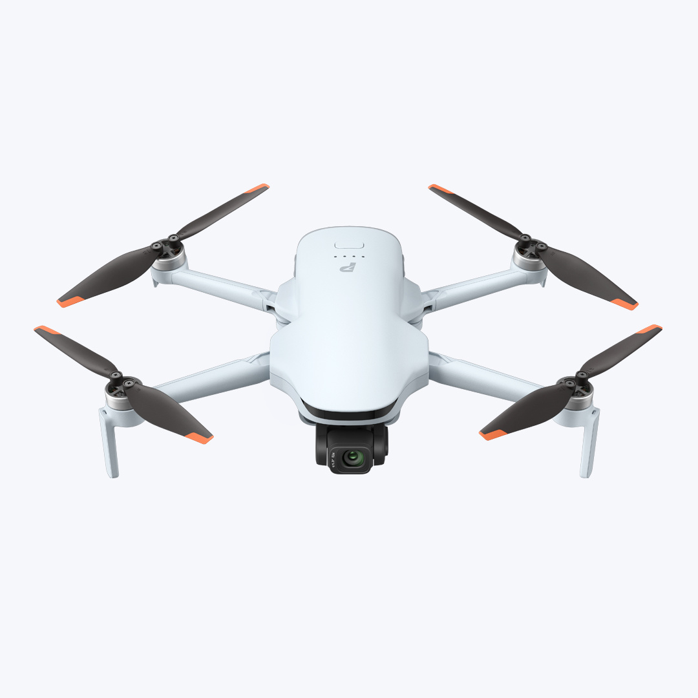
ATOM 3
博坦 · 1080 × 1080
potensic-atom-3产品样例图
官方来源
ATOM SE
博坦 · 324 × 324
potensic-atom-se产品样例图
官方来源